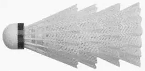

队列
与栈一样，队列也是最基本的数据结构之一。 队列也是对象的一种容器，其中对象的插入和删除遵循“先进先出”（First-In-First-Out, FIFO）的原则--也就是说，每次删除的只能是最先插入的对象。 因此，我们可以想象成将对象追加在队列的后端，而从其前端摘除对象。 就这一性质而言，队列与栈堪称“孪生兄弟”。 比如，在银行等待接受服务时，顾客们就会排成一个队列--最先到达者优先得到服务。 再如，用球桶来乘放羽毛球时，所有的球也排成一个队列--你总是从一端将球取出，而从另一端把球放入。

队列ADT(AbstractDataType)
队列的抽象数据类型就是一个容器，其中的对象排成一个序列， 我们只能访问和取出排在最前端（Front）的对象， 只能在队列的尾部（Rear）插入新对象。正是按照这一规则， 才能保证最先被插入的对象首先被删除（FIFO）。
队列ADT 首先支持下面的两个基本方法：
| 操作方法 | 功能描述 |
|---|---|
| enqueue(x) | 将元素x 加到队列末端 输入：一个对象 输出：无 |
| dequeue() | 若队列非空，则将队首元素移除，并将其返回否则，报错 输入：无 输出：对象 |
| size() | 返回队列中当前包含的元素数目 输入：无 输出：非负整数 |
| isEmpty() | 检查队列是否为空 输入：无 输出：布尔标志 |
| front() | 若队列非空，则返回队首元素（但并不移除）否则，报错 输入：无 输出：队头对象 |
队列的应用十分广泛，无论是商店、剧院、机场还是银行、医院，凡是按照“先到的客户优先接受服务”原则的场合，都可以利用队列这一数据结构来编排相应的服务。
基于定长循环数组的队列的实现
面试中关于队列的常见问题
- 使用队列表示栈
- 对队列的前k个元素倒序
- 使用队列生成从1到n的二进制数
- 循环分配器
队列结构很适于用来实现循环分配器：按照环形次序反复循环， 为共享某一资源的一群客户（比如共享一个CPU 的多个应用程序） 做资源分配。
算法：RoundRobin
{
e = Q.dequeue();
Serve(e);
Q.enqueue(e);
}
- osephus 环 (约瑟夫环)
孩提时的你是否玩过“烫手山芋”游戏：一群小孩围成一圈， 有一个刚出锅的山芋在他们之间传递。其中一个孩子负责数数， 每数一次，拿着山芋的孩子就把山芋转交给右边的邻居。 一旦数到某个特定的数，拿着山芋的孩子就必须退出，然后重新数数。 如此不断，最后剩下的那个孩子就是幸运者。
通常，数数的规则总是从1 开始，数到k 时让拿着山芋的孩子出列， 然后重新从1 开始。Josephus问题可以表述为：n 个孩子玩这个游戏， 最后的幸运者是谁？
为了解答这个问题，我们可以利用队列结构来表示围成一圈的n个孩子。 一开始，假定对应于队列首节点的那个孩子拿着山芋。 然后，按照游戏的规则，把“土豆”向后传递到第k个孩子 （交替进行k次dequeue()和k次enqueue()操作）， 并让她出队（dequeue()）。如此不断迭代，直到队长 （getSize()）为1。
/*
* Josephus环
*/
import dsa.*;
import java.io.*;
//模拟Josephus环
public class Josephus {
// 利用队列结构模拟Josophus环
public static Object Josephus(Queue Q, int k) {
if (Q.isEmpty())
return null;
while (Q.getSize() > 1) {// 不断迭代
Q.Traversal();// 显示当前的环
for (int i = 0; i < k; i++)
// 将山芋向前传递k次
Q.enqueue(Q.dequeue());
Object e = Q.dequeue();// 拿着山芋的孩子退出
System.out.println("\n\t" + e + "退出");
}
return Q.dequeue();// 最后剩下的那个孩子
}
// 将一组对象组织为一个队列
public static Queue buildQueue(Object a[]) {
Queue Q = new Queue_Array();
for (int i = 0; i < a.length; i++)
Q.enqueue(a[i]);
return Q;
}
// 测试用main方法
public static void main(String[] args) {
String[] kid = { "Alice", "Bob", "Cindy", "Doug", "Ed", "Fred", "Gene",
"Hope", "Irene", "Jack", "Kim", "Lance", "Mike", "Nancy",
"Ollie" };
System.out.println("最终的幸运者是" + Josephus(buildQueue(kid), 5));
}
}